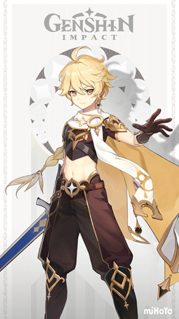
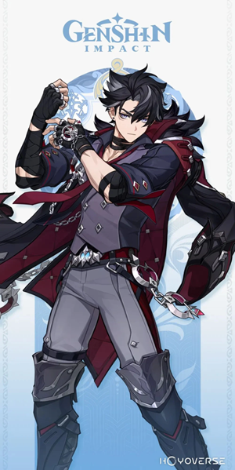
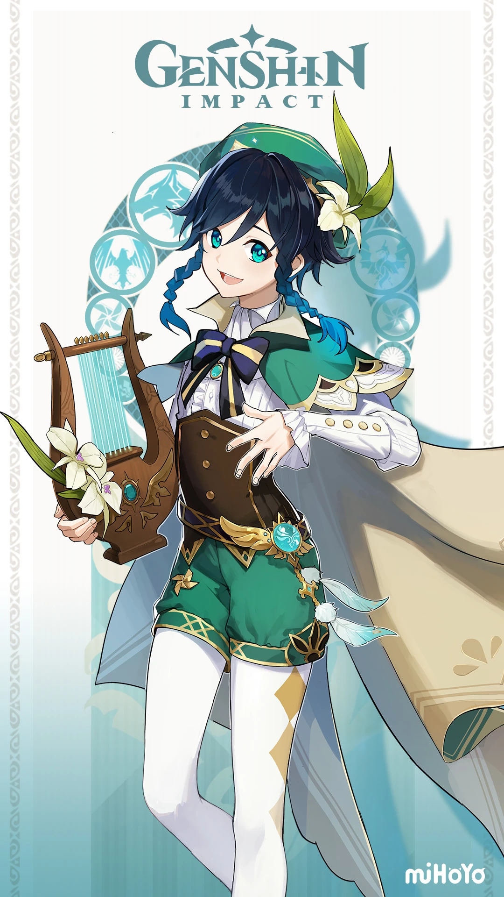
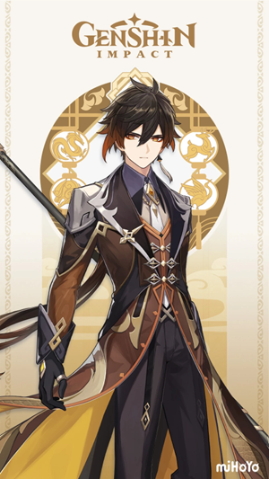
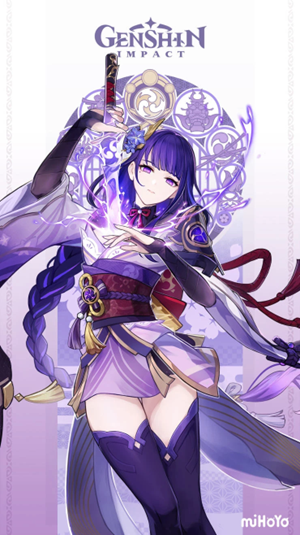
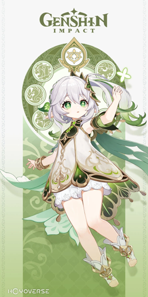
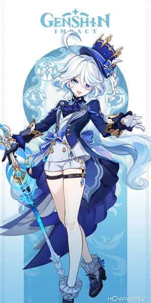

personagens
-

VIAJANTE
No início de Genshin Impact, o Viajante é o protagonista. Dois gêmeos, uma garota e um garoto, são atacados por uma Deusa Desconhecida. Ela captura um dos gêmeos, deixa o outro desacordado e sela seus caminhos de viagem, aprisionando-os em Teyvat. O gêmeo acordado parte em uma jornada para encontrar o irmão/irmã perdido, acompanhado por Paimon.
-

DILUC
Nascido na influente Família Ragnvindr, Diluc é o atual proprietário do Adega do Alvorecer e um nobre de alta estima na sociedade de Mondstadt. Embora um incidente anterior o tenha levado a se separar dos Cavaleiros de Favonius, ele continua a proteger Mondstadt à sua própria maneira.
-

WRIOTHESLEY
Wriothesley, Duque da Fortaleza Meropide, gerencia discretamente um local de exílio para criminosos submarinos. Ao ser elogiado por sua habilidade em resolver problemas, ele responde: "Eles buscavam refúgio. Eu lhes dei a 'tranquilidade' que precisavam".
-

VENTI
Venti é um bardo amante do vinho e de espírito livre em Mondstadt e o atual corpo mortal de Barbatos, o Arconte Anemo. Ele também é um personagem Anemo jogável em Genshin Impact.
-

ZHONGLI
Zhongli é um consultor da Casa Funerária de Wangsheng que aparece pela primeira vez nas Missões do Arconte Capítulo 1, Ato 2: Corpos que Partiram para Longe.
-

SHOGUN RAIDEN
A Shogun Raiden é a composição de dois seres coexistindo em um só corpo: Ei, a atual Arconte Electro de Inazuma; e a Shogun, a marionete criada por Ei para atuar como governante de Inazuma em seu lugar.
-

NAHIDA
Ela é o corpo mortal da Lorde Menor Kusanali, atual Arconte Dendro.
-

FURINA
Furina, a humanidade separada da Deusa da Justiça, liderou Fontaine como Arconte Hydro por 500 anos, seguindo planos para enganar os Princípios Celestiais e salvar a cidade de uma profecia. Após a morte dos Focalors e a destruição do Trono Divino, ela abandonou seu papel e vive como humana.